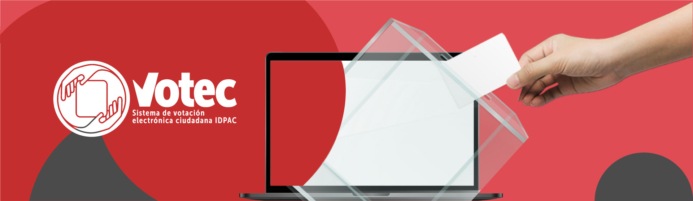

Inicio
¿Qué es y cómo funciona?
Sistemas de votación
Etapas del proceso electoral
Search for anything.

El Sistema de Votación Electrónica Ciudadana
Contamos con dos grandes grupos de sistemas de voto electrónico:
Votec Comunal
Es un software que permite la votación presencial con autenticación presencial realizada por medio de urna.
Votec Ciudadano
Pueden ejercer su derecho al voto electrónico de manera 100% virtual.
Votaciones activas
Artículos, informes y cartillas
Consejos consultivos locales de niños niñas y adolescentes
Vota aquí
Consejos consultivos de la Participación Ciudadana
Vota aquí
Elecciones consejos de cultura y deporte
Vota aquí
Principios
Rectores
Leer más
Muchos ojos - Manos =
Transparencia
Una persona + Un Voto =
Credibilidad
Reglas claras - Resultados inciertos =
Seguridad